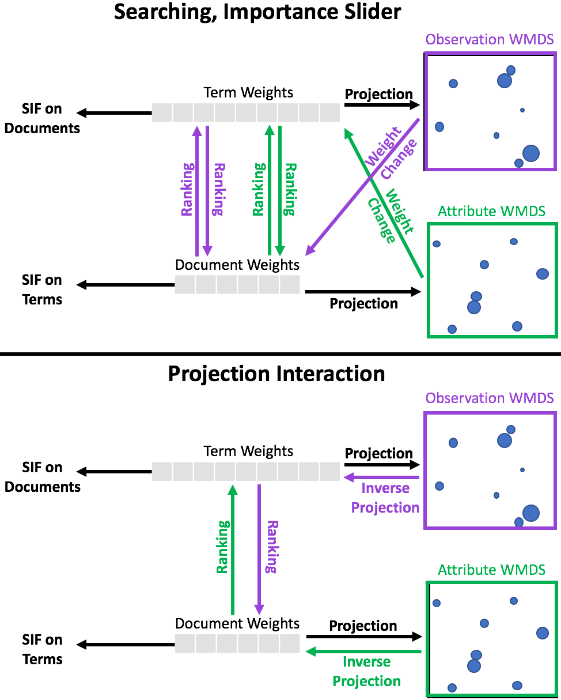

SIRIUS and Centaurus are both visualizations for high-dimensional data that are similar in nature to Cosmos, with the exception that there are now two visualizations: one for the data items and one for their attributes. Using the "Provide Feedback After Interaction" checkbox beneath a given projection allows the given visualization to "receive information" from the other visualization. For example, if the checkbox is checked under the data item visualization, then performing an interaction in that visualization will result in the corresponding change that will occur in the attribute visualization to affect the final appearance of the data item visualization. In addition to this interactivity, Centaurus also enables foraging. In other words, SIRIUS displays all data by default (like Andromeda does), whereas Centaurus enables both traditional keyword search foraging and automated foraging (similar to Cosmos).
Ultimately, the interactivity between these visualizations is enabled using dot products between weight vectors and normalized raw data. Initially, these weight vectors are used as they are in Andromeda, which allow for each visualization of high-dimensional data to be individually interactive. As such, the data item visualization uses attribute weights, and the attribute visualization uses data item weights. After a parametric interaction or a projection-level interaction (as described in the Andromeda link above), one of these weight vectors is redefined. Using a dot product with normalized data, we are able to use this weight vector to produce the other weight vector.
As a more concrete example, let's say the user performs a parametric interaction with an attribute. The user-defined weight is then used in the the attribute weights, changing this weight vector. By using a dot product between this weight vector and the normalized data for the data items, we are able to compute a new set of weights for each data item. As a final step to enable richer insights into correlations within the dataset, we perform a similar dot product between these new data item weights and the normalized data for the attributes to produce a final set of attribute weights.
A similar process is used for projection-level interactions. If the user performs such an interaction in the attribute visualization (to reflect desired similarity/dissimilarity relationships between attributes), then a new set of data item weights is computed (such that these weights would produce a visualization that captured the user-defined relationships). These data item weights are then used in a dot product with the normalized attribute data to produce a new set of attribute weights.
Centaurus takes this concept a step further by utilizing these weight vectors as a ranking metric on previously unseen data items and attributes to perform automated foraging. Thus, like in Cosmos, this automated foraging uses the same user interest models used by the projections to automatically add more information to the screen. This new method for automated foraging is currently under review.
Most relevant publications:
Other relevant publications and links: